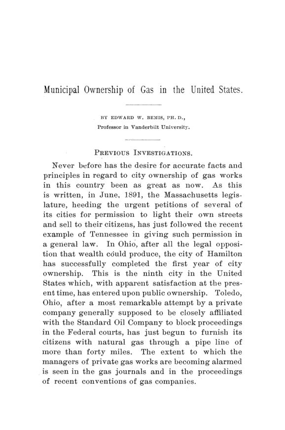

Nove cidades e uma conta: o gás municipal posto à prova
Leitura: 10 min
Em 1890 e 1891, Edward Bemis visitou as nove cidades americanas donas da própria usina de gás. Voltou com custos, tarifas, dívidas e uma tese: o problema do monopólio privado não é o custo, é o capital aguado.


Na última semana de junho de 1891, Edward W. Bemis desembarcou em Hamilton, Ohio, com uma denúncia no bolso. Um correspondente de Cincinnati lhe escrevera que a usina municipal de gás era um fracasso absoluto, que os dois jornais da cidade pediam sua venda e que mais de sessenta consumidores tinham voltado à antiga empresa privada em dois meses. Bemis conferiu nome por nome. Encontrou apenas três. Descobriu também que o informante trabalhava no escritório dos advogados da empresa privada.
O episódio resume o método da monografia. Bemis, professor da Vanderbilt University, visitou em agosto e dezembro de 1890 todas as cidades americanas que fabricavam e vendiam o próprio gás, exceto a pequena Bellefontaine. Eram nove: quatro na Virgínia, uma na Virgínia Ocidental, duas em Ohio, uma no Kentucky e Filadélfia, na Pensilvânia, dona da usina desde 1841. Leu relatórios, abriu livros contábeis e interrogou cidadãos nas ruas e até nos trens. O Arquivo já tratou do tema em 1886, com a monografia de Edmund J. James; Bemis se propõe a fazer o que James não fez, medir os resultados.
Por que era preciso refazer as contas?
Porque as contas em circulação eram ruins. O estudo mais citado contra a propriedade municipal, o relatório nº 91 de uma comissão do Senado de Massachusetts, de abril de 1890, afirmava conhecer só quatro cidades que vendiam gás aos cidadãos. Havia oito. Segundo o superintendente de Richmond, boa parte da investigação ali foi conduzida por um engenheiro da Bay State Gas Company, de Boston, que acompanhava a comissão. Para fabricar um prejuízo, diz Bemis, a comissão avaliou o gás das ruas abaixo do preço de mercado e cobrou juros sobre uma avaliação inflada da usina.
Em Hamilton, a usina municipal começou a operar em abril de 1890, depois de os eleitores aprovarem a obra por 2.412 votos contra 59. A empresa privada respondeu com processos em tribunais estaduais e federais, e perdeu as decisões principais. O preço caiu de 2 dólares para 1 dólar por mil pés cúbicos, e a própria empresa privada passou a cobrar 95 centavos.
Quanto custava o gás das cidades?
O caso mais vistoso era Wheeling, na Virgínia Ocidental. Quando a cidade assumiu a usina, em 1870, o gás custava 3,50 dólares. Em 1891, quem pagava em dia pagava 75 centavos. O custo, incluindo reparos e extensões, era de 40,2 centavos; somando 6% de juros e 2% de impostos que a usina não pagava, chegava a 67 centavos. Parte se explica pelo carvão a 1,58 dólar a tonelada. O resto, conclui Bemis, era boa gestão.
Bemis é cuidadoso com o que os números provam. Admite que não é certo que as empresas privadas, nas mesmas condições de carvão e mercado, produzam mais caro. O secretário da usina de Wheeling chegou a lhe escrever que uma empresa privada fabricaria um pouco mais barato. A tese do livro é outra: quem fica com a diferença entre o custo e o preço.
Quanto vale uma usina de gás?
Aqui está o centro técnico da monografia. Os superintendentes municipais tinham adotado o hábito dos monopólios privados: avaliavam a usina pelo custo histórico de tudo o que um dia se gastou nela. Em Richmond, os comprovantes somavam entre 800 mil e 900 mil dólares. Mas parte da planta fora substituída e os materiais tinham barateado. Peça por peça, canos, medidores, terreno, gasômetros, Bemis e o superintendente chegaram a 592.795 dólares para reconstruí-la.
O critério certo, sustenta, é o custo de duplicar uma usina de mesma eficiência, porque é a ele que a concorrência reduz o valor de uma fábrica comum. Um monopólio que continua cobrando retorno sobre capital já obsoleto apenas escapou dessa disciplina. Com esse critério, ele mede o capital por mil pés cúbicos vendidos por ano, e a comparação fica desconfortável para as empresas privadas.
Para cada dólar necessário para reconstruir as usinas, calcula Bemis, as empresas privadas tinham quase três dólares em ações e títulos, e a maior parte rendia dividendos. O nome técnico era stock watering, a emissão de ações sem contrapartida em ativos. A prova mais dura vinha de Nova York. O relatório do Senado estadual de 31 de março de 1885, tão raro que Bemis o copiou na Biblioteca do Congresso, mostrava que os consumidores pagaram 74,7 milhões de dólares em dez anos, quase metade lucro líquido. Em 1883, o gás custava às empresas 60 centavos no gasômetro e era vendido a 2,16 dólares.
A usina pública vira cabide de empregos?
Era a objeção decisiva, e Bemis a encara pelo pior caso. Filadélfia foi dona da usina por quase meio século sem controlá-la: até abril de 1887, a gestão cabia a um conselho de curadores que nem a prefeitura nem a câmara podiam fiscalizar, protegido pelos tribunais enquanto houvesse títulos a resgatar. O conselho usou os cargos como prêmio partidário. Com a reforma que pôs a usina sob um diretor de obras públicas e concurso para contratar, o quadro caiu de 2.257 para 1.546 empregados em quatro anos.
Nas outras cidades, o balanço é misto e contado sem retoque. Em Wheeling, em 1879, o superintendente e o secretário desviaram fundos e queimaram os livros para esconder a fraude; seguiu-se uma reorganização completa. Em Richmond, todos os funcionários eram presumidamente do partido dominante, e talvez houvesse gente demais na folha. Ainda assim, Bemis conclui que seis das nove cidades estavam inteiramente livres de influência política.
O contraponto é a corrupção do outro lado do balcão. Um advogado de uma grande empresa de gás no Tennessee lhe disse que não houve ano sem suborno direto à câmara municipal, para obter favores ou se defender de extorsões. Um acionista de outra empresa contou que ela pagava todo ano 2% do capital aos vereadores. Para Bemis, a troca ocasional de funcionários por motivo político não se compara a isso.
O lucro da usina é tarifa ou imposto?
Filadélfia cobrava 1,50 dólar por um gás que lhe custava 84 centavos. A diferença ia para o caixa da cidade, que esbarrava no limite constitucional de endividamento e tinha muitos pequenos proprietários avessos a impostos diretos. Bemis preferia vender a um pouco acima do custo, para difundir o gás como combustível de cozinha, mas não vê ali grande injustiça: os pobres usavam pouco gás, e a tarifa alta pesava sobre as classes média e rica. O que o incomodava era outro efeito. O gás das repartições, que não pagavam nada, somou 551 milhões de pés cúbicos em 1890. O superintendente propunha cobrar de cada departamento, ainda que isso parecesse absurdo:
“tirar dinheiro de um bolso e pôr no outro” (“taking money out of one pocket and putting it into another”)
Melhor isso, completava, do que tirar dos dois bolsos e dissipar no ar. A pergunta sobre o monopólio privado, Bemis a responde no capítulo teórico. Na concorrência, o preço tende ao custo de produção; no monopólio, fica no ponto que maximiza o lucro. O excedente sobre o retorno normal não é lucro comum:
“tem a natureza de um imposto cobrado por particulares sobre o público” (“in the nature of a tax levied by private parties upon the public”)
Daí a resposta à acusação de socialismo. A propriedade municipal de um monopólio natural, escreve, não tem ligação lógica com a entrada do Estado na fabricação de pão ou tecido. Regular é inevitável; se por meio da propriedade pública ou de uma comissão, é questão de experiência. E a experiência das comissões era fraca: a de Massachusetts, a mais elogiada do país, só reduzira preços duas vezes, em Worcester e em Chelsea.
Quem paga pelo monopólio quando a cidade compra a usina?
Em maio de 1891, a Assembleia de Massachusetts autorizou as cidades a fabricar gás e eletricidade, por 158 votos a 30 na Câmara e 22 a 10 no Senado. Bemis aplaude, mas critica uma cláusula: na compra de uma usina privada, os peritos deveriam considerar sua capacidade de lucro. Como o lucro vinha de preços de monopólio, os cidadãos pagariam não só pelos canos e gasômetros, mas pelo próprio monopólio, que a empresa nunca criou. Ele aponta como melhor modelo a lei inglesa de iluminação elétrica de 1882, que excluía da indenização o fundo de comércio e os lucros futuros.
Toledo, que comprara campos de gás natural e uma tubulação de mais de quarenta milhas, mostrava o que havia em jogo. A empresa ligada à Standard Oil cobrava 12 centavos por mil pés cúbicos; a linha municipal, 8. Bemis previa que a década dobraria o número de usinas municipais de gás no país.
Na minha leitura
Na minha leitura, a contribuição duradoura de Bemis não é o veredito a favor da prefeitura, e sim a régua. Ao trocar o custo histórico pelo custo de duplicação e medir o capital por unidade vendida, ele separou o que remunera investimento do que remunera privilégio. Essa distinção, entre a base de ativos que merece retorno e o capital que só existe no papel, continua sendo a pergunta central de qualquer revisão tarifária. Também é honesto o bastante para registrar o que enfraquece a própria tese: a eficiência produtiva não era o diferencial, e Filadélfia mostra que uma usina pública sem prestação de contas pode ser pior que uma privada.
O documento tem seus limites. Bemis trabalha com nove casos escolhidos por existirem, não por amostragem, e confia muito na palavra de superintendentes. Mas sua lição de governança vale para os dois modelos: o que protege o usuário não é a natureza do dono, é a combinação de contabilidade aberta, gestor técnico e alguém a quem prestar contas.
Glossário
- mil pés cúbicos
- unidade em que o gás era vendido, equivalente a cerca de 28 metros cúbicos.
- custo de duplicação
- quanto custaria construir hoje uma usina de mesma eficiência; Bemis o usa como valor justo do capital.
- stock watering
- emissão de ações e títulos acima do capital efetivamente investido, para justificar lucros maiores.
- monopólio natural
- atividade em que uma só rede atende a cidade mais barato do que duas, como gás, água e bondes.
- resíduos
- subprodutos da destilação do carvão, como coque, alcatrão e amônia, vendidos para reduzir o custo do gás.
- gás de água
- gás produzido sobretudo a partir de petróleo e coque, sem resíduos para venda, que ganhava espaço sobre o gás de carvão.
Fontes
- Municipal Ownership of Gas in the United States (pp. 9–185). JSTOR · Internet Archive (PDF)
- Sumário da edição no JSTOR: Publications of the American Economic Association, vol. 6, nº 4/5.
Documento em domínio público (EUA, publicado antes de 1931), via JSTOR Early Journal Content e Internet Archive. Resumo e comentário do autor deste site, sem afiliação com a American Economic Association. Encontrou um erro? Escreva: a correção é publicada no próprio texto, com data.
← Nº 29 · Florestas públicas, 1891: uma lei da Marinha contra o machado Nº 31 · Trinta e quatro comissões, nenhum padrão: a regulação ferroviária de 1891 →